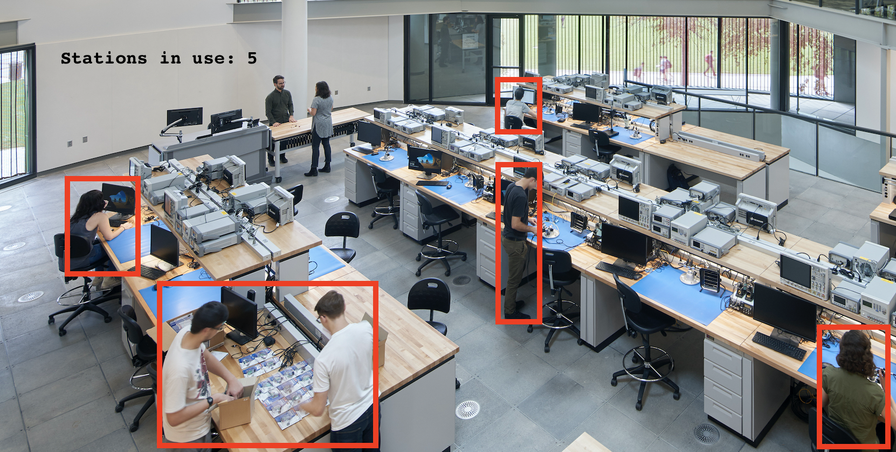

Analyzing Resource Usage in the Maker Space at Georgia Tech
Patrick Taylor, Jacob Brechbuhl, Richard MengFall 2020 CS4476 Computer Vision: Class Project
Georgia Tech
Abstract
The goal of the project is to monitor video camera footage of the maker space at Georgia Tech and identify the usage of its stations. Using the data we collect about usage of the individual stations we hope to give students more information regarding wait times at stations, and ideally optimize the resources within the Maker Space.Teaser Figure
Introduction
We plan to use OpenCV to identify Maker Space users, the stations, and the components of the stations. We are going to capture the amount of time users spend at individual stations and use this data to predict resource usage in the Maker Space. We will be collecting video footage of ourselves using Maker Space stations in order to test the methods of detections we use. OpenCV uses a variation ofApproach
We are going to approach people and station detection by first converting images from the video footage into grayscale, identifying shapes within the image, comparing them to other similar images of the space we're observing, and finally identifying the people and stations within the images.Experiments and Results
Due to current pandemic, we have not been able to record our own footage of the Maker Space. Instead, we found some video footage from the internet to test the proof of concept of our approach. The video we chose to experiment is a street recording of pedestrians walking on the sidewalk. We are using a histogram of oriented gradients (HOG) from OpenCV to perform detection of people within the video footage. The technique works by counting occurrences of specific gradient orientations within localized parts of an image (derived from the video footage). The HOG detector uses a sliding detection window which is moved around the image. At each location within the detector window, a HOG descriptor is computed for the detection window. The HOG descriptor is shown to a trained SVM and is classified as either a person or not a person. It's similar to the SIFT descripters we used in PS4, but differs in that it is computed on a grid of cells overlayed over the image. Below is an example of the footage we collected online. The top video is the original and the bottom video has grids layed over areas of the video where people are detected. It can be seen that the large group of people on the far sidewalk are not detected by the model, while the person walking directly in front of the camera is. Knowing this information, we will be sure to collect footage of the Maker Space that is oriented in a way such that all stations are clearly visible and relatively close to the camera so that our model can more accurately detect people using them.

Moving forward we are not going to be using any external data sets other than the video footage we collect of the Maker Space. Taking the approach mentioned above, we are going to record the time stamp of images where we identify a person beginning to use a station as well as the time stamp of images where they end use of the station. We are going to create test data sets by going into the Maker Space and using the stations ourselves, manually identifying the images of a station in use and not in use. Using this dataset as a baseline, we will train our model using the approach mentioned above to identify when a station is in use and when it is no longer in use, and collect the time series data associated with these images. Using the time series data that we collect regarding usage of stations, we are looking to optimize the layout of the Maker Space to minimize the average amount of time it takes for a user to use a station.